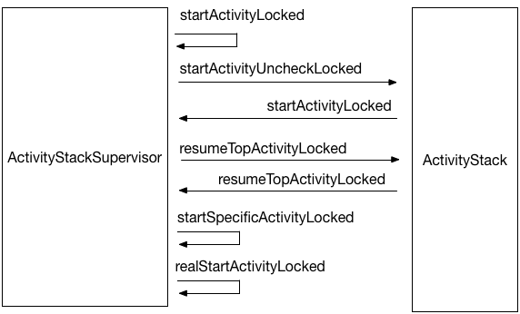
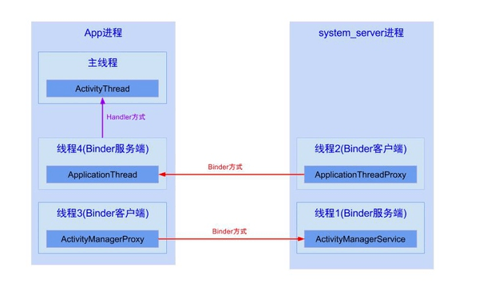
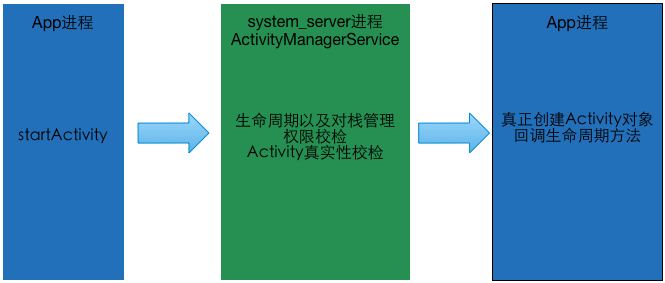

Android 插件化原理解析——Activity生命周期管理
之前的 Android插件化原理解析 系列文章揭开了Hook机制的神秘面纱，现在我们手握倚天屠龙，那么如何通过这种技术完成插件化方案呢？具体来说，插件中的Activity，Service等组件如何在Android系统上运行起来？
在Java平台要做到动态运行模块、热插拔可以使用ClassLoader技术进行动态类加载，比如广泛使用的OSGi技术。在Android上当然也可以使用动态加载技术，但是仅仅把类加载进来就足够了吗？Activity，Service等组件是有生命周期的，它们统一由系统服务AMS管理；使用ClassLoader可以从插件中创建Activity对象，但是，一个没有生命周期的Activity对象有什么用？所以在Android系统上，仅仅完成动态类加载是不够的；我们需要想办法把我们加载进来的Activity等组件交给系统管理，让AMS赋予组件生命周期；这样才算是一个有血有肉的完善的插件化方案。
接下来的系列文章会讲述 DroidPlugin对于Android四大组件的处理方式，我们且看它如何采用Hook技术坑蒙拐骗把系统玩弄于股掌之中，最终赋予Activity，Service等组件生命周期，完成借尸还魂的。
首先，我们来看看DroidPlugin对于Activity组件的处理方式。
阅读本文之前，可以先clone一份 understand-plugin-framework，参考此项目的intercept-activity模块。另外，如果对于Hook技术不甚了解，请先查阅我之前的文章：
AndroidManifest.xml的限制
读到这里，或许有部分读者觉得疑惑了，启动Activity不就是一个startActivity的事吗，有这么神秘兮兮的？
启动Activity确实非常简单，但是Android却有一个限制：必须在AndroidManifest.xml中显式声明使用的Activity；我相信读者肯定会遇到下面这种异常：
03-18 15:29:56.074 20709-20709/com.weishu.intercept_activity.app E/AndroidRuntime﹕ FATAL EXCEPTION: main
Process: com.weishu.intercept_activity.app, PID: 20709
android.content.ActivityNotFoundException: Unable to find explicit activity class
{com.weishu.intercept_activity.app/com.weishu.intercept_activity.app.TargetActivity};
have you declared this activity in your AndroidManifest.xml?
『必须在AndroidManifest.xml中显示声明使用的Activity』这个硬性要求很大程度上限制了插件系统的发挥：假设我们需要启动一个插件的Activity，插件使用的Activity是无法预知的，这样肯定也不会在Manifest文件中声明；如果插件新添加一个Activity，主程序的AndroidManifest.xml就需要更新；既然双方都需要修改升级，何必要使用插件呢？这已经违背了动态加载的初衷：不修改插件框架而动态扩展功能。
能不能想办法绕过这个限制呢？
束手无策啊，怎么办？借刀杀人偷梁换柱无中生有以逸待劳乘火打劫瞒天过海…等等！偷梁换柱瞒天过海？貌似可以一试。
我们可以耍个障眼法：既然AndroidManifest文件中必须声明，那么我就声明一个（或者有限个）替身Activity好了，当需要启动插件的某个Activity的时候，先让系统以为启动的是AndroidManifest中声明的那个替身，暂时骗过系统；然后到合适的时候又替换回我们需要启动的真正的Activity；所谓瞒天过海，莫过如此！
现在有了方案了，但是该如何做呢？兵书又说，知己知彼百战不殆！如果连Activity的启动过程都不熟悉，怎么完成这个瞒天过海的过程？
Activity启动过程
启动Activity非常简单，一个startActivity就完事了；那么在这个简单调用的背后发生了什么呢？Look the fucking source code！
关于Activity 的启动过程，也不是三言两语能解释清楚的，如果按照源码一步一步走下来，插件化系列文章就不用写了；所以这里我就给出一个大致流程，只列出关键的调用点（以Android 6.0源码为例）；如果读者希望更详细的讲解，可以参考老罗的 Android应用程序的Activity启动过程简要介绍和学习计划
首先是Activity类的startActivity方法：
public void startActivity(Intent intent) {
startActivity(intent, null);
}
跟着这个方法一步一步跟踪，会发现它最后在startActivityForResult里面调用了Instrument对象的execStartActivity方法；接着在这个函数里面调用了ActivityManagerNative类的startActivity方法；这个过程在前文已经反复举例讲解了，我们知道接下来会通过Binder IPC到AMS所在进程调用AMS的startActivity方法；Android系统的组件生命周期管理就是在AMS里面完成的，那么在AMS里面到底做了什么呢？
ActivityManagerService的startActivity方法如下：
public final int startActivity(IApplicationThread caller, String callingPackage,
Intent intent, String resolvedType, IBinder resultTo,
String resultWho, int requestCode, int startFlags,
String profileFile, ParcelFileDescriptor profileFd, Bundle options) {
return startActivityAsUser(caller, callingPackage, intent, resolvedType, resultTo,
resultWho, requestCode,
startFlags, profileFile, profileFd, options, UserHandle.getCallingUserId());
}
很简单，直接调用了startActivityAsUser这个方法；接着是ActivityStackSupervisor类的startActivityMayWait方法。这个ActivityStackSupervisor类到底是个啥？如果仔细查阅，低版本的Android源码上是没有这个类的；后来AMS的代码进行了部分重构，关于Activity栈管理的部分单独提取出来成为了ActivityStackSupervisor类；好了，继续看代码。
startActivityMayWait这个方法前面对参数进行了一系列处理，我们需要知道的是，在这个方法内部对传进来的Intent进行了解析，并尝试从中取出关于启动Activity的信息。
然后这个方法调用了startActivityLocked方法；在startActivityLocked方法内部进行了一系列重要的检查：比如权限检查，Activity的exported属性检查等等；我们上文所述的，启动没有在Manifestfest中显示声明的Activity抛异常也是这里发生的：
if (err == ActivityManager.START_SUCCESS && aInfo == null) {
// We couldn't find the specific class specified in the Intent.
// Also the end of the line.
err = ActivityManager.START_CLASS_NOT_FOUND;
}
这里返回ActivityManager.START_CLASS_NOT_FOUND之后，在Instrument的execStartActivity返回之后会检查这个值，然后跑出异常：
case ActivityManager.START_CLASS_NOT_FOUND:
if (intent instanceof Intent && ((Intent)intent).getComponent() != null)
throw new ActivityNotFoundException(
"Unable to find explicit activity class "
+ ((Intent)intent).getComponent().toShortString()
+ "; have you declared this activity in your AndroidManifest.xml?");
源码看到这里，我们已经确认了『必须在AndroidManifest.xml中显示声明使用的Activity』的原因；然而这个校检过程发生在AMS所在的进程system_server，我们没有办法篡改，只能另寻他路。
OK，我们继续跟踪源码；在startActivityLocked之后处理的都是Activity任务栈相关内容，这一系列ActivityStack和ActivityStackSupervisor纠缠不清的调用看下图就明白了；不明白也没关系: D 目前用处不大。

这一系列调用最终到达了ActivityStackSupervisor的realStartActivityLocked方法；人如其名，这个方法开始了真正的“启动Activity”：它调用了ApplicationThread的scheduleLaunchActivity方法，开始了真正的Activity对象创建以及启动过程。
这个ApplicationThread是什么，是一个线程吗？与ActivityThread有什么区别和联系？
不要被名字迷惑了，这个ApplicationThread实际上是一个Binder对象，是App所在的进程与AMS所在进程system_server通信的桥梁；在Activity启动的过程中，App进程会频繁地与AMS进程进行通信：
- App进程会委托AMS进程完成Activity生命周期的管理以及任务栈的管理；这个通信过程AMS是Server端，App进程通过持有AMS的client代理ActivityManagerNative完成通信过程；
- AMS进程完成生命周期管理以及任务栈管理后，会把控制权交给App进程，让App进程完成Activity类对象的创建，以及生命周期回调；这个通信过程也是通过Binder完成的，App所在server端的Binder对象存在于ActivityThread的内部类ApplicationThread；AMS所在client通过持有IApplicationThread的代理对象完成对于App进程的通信。
App进程与AMS进程的通信过程如图所示：

App进程内部的ApplicationThread server端内部有自己的Binder线程池，它与App主线程的通信通过Handler完成，这个Handler存在于ActivityThread类，它的名字很简单就叫H，这一点我们接下来就会讲到。
现在我们明白了这个ApplicationThread到底是个什么东西，接上文继续跟踪Activity的启动过程；我们查看ApplicationThread的scheduleLaunchActivity方法，这个方法很简单，就是包装了参数最终使用Handler发了一个消息。
正如刚刚所说，ApplicationThread所在的Binder服务端使用Handler与主线程进行通信，这里的scheduleLaunchActivity方法直接把启动Activity的任务通过一个消息转发给了主线程；我们查看Handler类对于这个消息的处理：
race.traceBegin(Trace.TRACE_TAG_ACTIVITY_MANAGER, "activityStart");
ActivityClientRecord r = (ActivityClientRecord)msg.obj;
r.packageInfo = getPackageInfoNoCheck(
r.activityInfo.applicationInfo, r.compatInfo);
handleLaunchActivity(r, null);
Trace.traceEnd(Trace.TRACE_TAG_ACTIVITY_MANAGER);
可以看到，这里直接调用了ActivityThread的handleLaunchActivity方法，在这个方法内部有一句非常重要：
Activity a = performLaunchActivity(r, customIntent);
绕了这么多弯，我们的Activity终于被创建出来了！继续跟踪这个performLaunchActivity方法看看发生了什么；由于这个方法较长，我就不贴代码了，读者可以自行查阅；要指出的是，这个方法做了两件很重要的事情：
- 使用ClassLoader加载并通过反射创建Activity对象
java.lang.ClassLoader cl = r.packageInfo.getClassLoader();
activity = mInstrumentation.newActivity(
cl, component.getClassName(), r.intent);
StrictMode.incrementExpectedActivityCount(activity.getClass());
r.intent.setExtrasClassLoader(cl);
- 如果Application还没有创建，那么创建Application对象并回调相应的生命周期方法；
Application app = r.packageInfo.makeApplication(false, mInstrumentation);
// ... 省略
if (r.isPersistable()) {
mInstrumentation.callActivityOnCreate(activity, r.state, r.persistentState);
} else {
mInstrumentation.callActivityOnCreate(activity, r.state);
}
Activity的启动过程到这里就结束了，可能读者还是觉得迷惑：不就是调用了一系列方法吗？具体做了什么还是不太清楚，而且为什么Android要这么设计？
方法调用链再长也木有关系，有两点需要明白：
- 平时我们所说的Application被创建了，onCreate方法被调用了，我们或许并没有意识到我们所说的Application, Activity除了代表Android应用层通常所代表的“组件”之外，它们其实都是普通的Java对象，也是需要被构造函数构造出来的对象的；在这个过程中，我们明白了这些对象到底是如何被创建的。
- 为什么需要一直与AMS进行通信？哪些操作是在AMS中进行的？其实AMS正如名字所说，管理所有的“活动”，整个系统的Activity堆栈，Activity生命周期回调都是由AMS所在的系统进程system_server帮开发者完成的；Android的Framework层帮忙完成了诸如生命周期管理等繁琐复杂的过程，简化了应用层的开发。
瞒天过海——启动不在AndroidManifest.xml中声明的Activity
简要分析
通过上文的分析，我们已经对Activity的启动过程了如指掌了；就让我们干点坏事吧 :D
对与『必须在AndroidManifest.xml中显示声明使用的Activity』这个问题，上文给出了思路——瞒天过海；我们可以在AndroidManifest.xml里面声明一个替身Activity，然后在合适的时候把这个假的替换成我们真正需要启动的Activity就OK了。
那么问题来了，『合适的时候』到底是什么时候？在前文Hook机制之动态代理中我们提到过Hook过程最重要的一步是寻找Hook点；如果是在同一个进程，startActivity到Activity真正启动起来这么长的调用链，我们随便找个地方Hook掉就完事儿了；但是问题木有这么简单。
Activity启动过程中很多重要的操作（正如上文分析的『必须在AndroidManifest.xml中显式声明要启动的Activity』)都不是在App进程里面执行的，而是在AMS所在的系统进程system_server完成，由于进程隔离的存在，我们对别的进程无能为力；所以这个Hook点就需要花点心思了。
这时候Activity启动过程的知识就派上用场了；虽然整个启动过程非常复杂，但其实一张图就能总结：

先从App进程调用startActivity；然后通过IPC调用进入系统进程system_server，完成Activity管理以及一些校检工作，最后又回到了APP进程完成真正的Activioty对象创建。
由于这个检验过程是在AMS进程完成的，我们对system_server进程里面的操作无能为力，只有在我们APP进程里面执行的过程才是有可能被Hook掉的，也就是第一步和第三步；具体应该怎么办呢？
既然需要一个显式声明的Activity，那就声明一个！可以在第一步假装启动一个已经在AndroidManifest.xml里面声明过的替身Activity，让这个Activity进入AMS进程接受检验；最后在第三步的时候换成我们真正需要启动的Activity；这样就成功欺骗了AMS进程，瞒天过海！
说到这里，是不是有点小激动呢？我们写个demo验证一下：『启动一个并没有在AndroidManifest.xml中显示声明的Activity』
实战过程
具体来说，我们打算实现如下功能：在MainActivity中启动一个并没有在AndroidManifest.xml中声明的TargetActivity；按照上文分析，我们需要声明一个替身Activity，我们叫它StubActivity；
那么，我们的AndroidManifest.xml如下：
<manifest xmlns:android="http://schemas.android.com/apk/res/android"
package="com.weishu.intercept_activity.app">
<application
android:allowBackup="true"
android:label="@string/app_name"
android:icon="@mipmap/ic_launcher"
>
<activity android:name=".MainActivity">
<intent-filter>
<action android:name="android.intent.action.MAIN"/>
<category android:name="android.intent.category.LAUNCHER"/>
</intent-filter>
</activity>
<!-- 替身Activity, 用来欺骗AMS -->
<activity android:name=".StubActivity"/>
</application>
</manifest>
OK，那么我们启动TargetActivity很简单，就是个startActivity调用的事：
startActivity(new Intent(MainActivity.this, TargetActivity.class));
如果你直接这么运行，肯定会直接抛出ActivityNotFoundException然后直接退出；我们接下来要做的就是让这个调用成功启动TargetActivity。
狸猫换太子——使用替身Activity绕过AMS
由于AMS进程会对Activity做显式声明验证，因此在启动Activity的控制权转移到AMS进程之前，我们需要想办法临时把TargetActivity替换成替身StubActivity；在这之间有很长的一段调用链，我们可以轻松Hook掉；选择什么地方Hook是一个很自由的事情，但是Hook的步骤越后越可靠——Hook得越早，后面的调用就越复杂，越容易出错。
我们可以选择在进入AMS进程的入口进行Hook，具体来说也就是Hook AMS在本进程的代理对象ActivityManagerNative。如果你不知道如何Hook掉这个AMS的代理对象，请查阅我之前的文章 Hook机制之AMS&PMS
我们Hook掉ActivityManagerNative对于startActivity方法的调用，替换掉交给AMS的intent对象，将里面的TargetActivity的暂时替换成已经声明好的替身StubActivity；这种Hook方式 前文 讲述的很详细，不赘述；替换的关键代码如下：
if ("startActivity".equals(method.getName())) {
// 只拦截这个方法
// 替换参数, 任你所为;甚至替换原始Activity启动别的Activity偷梁换柱
// API 23:
// public final Activity startActivityNow(Activity parent, String id,
// Intent intent, ActivityInfo activityInfo, IBinder token, Bundle state,
// Activity.NonConfigurationInstances lastNonConfigurationInstances) {
// 找到参数里面的第一个Intent 对象
Intent raw;
int index = 0;
for (int i = 0; i < args.length; i++) {
if (args[i] instanceof Intent) {
index = i;
break;
}
}
raw = (Intent) args[index];
Intent newIntent = new Intent();
// 这里包名直接写死,如果再插件里,不同的插件有不同的包 传递插件的包名即可
String targetPackage = "com.weishu.intercept_activity.app";
// 这里我们把启动的Activity临时替换为 StubActivity
ComponentName componentName = new ComponentName(targetPackage, StubActivity.class.getCanonicalName());
newIntent.setComponent(componentName);
// 把我们原始要启动的TargetActivity先存起来
newIntent.putExtra(HookHelper.EXTRA_TARGET_INTENT, raw);
// 替换掉Intent, 达到欺骗AMS的目的
args[index] = newIntent;
Log.d(TAG, "hook success");
return method.invoke(mBase, args);
}
return method.invoke(mBase, args);
Binder驱动的消息，开始执行ActivityManagerService里面真正的startActivity方法；这时候AMS看到的intent参数里面的组件已经是StubActivity了，因此可以成功绕过检查，这时候如果不做后面的Hook，直接调用
startActivity(new Intent(MainActivity.this, TargetActivity.class));
也不会出现上文的ActivityNotFoundException
借尸还魂——拦截Callback从恢复真身
行百里者半九十。现在我们的startActivity启动一个没有显式声明的Activity已经不会抛异常了，但是要真正正确地把TargetActivity启动起来，还有一些事情要做。其中最重要的一点是，我们用替身StubActivity临时换了TargetActivity，肯定需要在『合适的』时候替换回来；接下来我们就完成这个过程。
在AMS进程里面我们是没有办法换回来的，因此我们要等AMS把控制权交给App所在进程，也就是上面那个『Activity启动过程简图』的第三步。AMS进程转移到App进程也是通过Binder调用完成的，承载这个功能的Binder对象是IApplicationThread；在App进程它是Server端，在Server端接受Binder远程调用的是Binder线程池，Binder线程池通过Handler将消息转发给App的主线程；（我这里不厌其烦地叙述Binder调用过程，希望读者不要反感，其一加深印象，其二懂Binder真的很重要）我们可以在这个Handler里面将替身恢复成真身。
这里不打算讲述Handler 的原理，我们简单看一下Handler是如何处理接收到的Message的，如果我们能拦截这个Message的接收过程，就有可能完成替身恢复工作；Handler类的dispathMesage如下：
public void dispatchMessage(Message msg) {
if (msg.callback != null) {
handleCallback(msg);
} else {
if (mCallback != null) {
if (mCallback.handleMessage(msg)) {
return;
}
}
handleMessage(msg);
}
}
从这个方法可以看出来，Handler类消息分发的过程如下：
- 如果传递的Message本身就有callback，那么直接使用Message对象的callback方法；
- 如果Handler类的成员变量mCallback存在，那么首先执行这个mCallback回调；
- 如果mCallback的回调返回true，那么表示消息已经成功处理；直接结束。
- 如果mCallback的回调返回false，那么表示消息没有处理完毕，会继续使用Handler类的handleMessage方法处理消息。
那么，ActivityThread中的Handler类H是如何实现的呢？H的部分源码如下：
public void handleMessage(Message msg) {
if (DEBUG_MESSAGES) Slog.v(TAG, ">>> handling: " + codeToString(msg.what));
switch (msg.what) {
case LAUNCH_ACTIVITY: {
Trace.traceBegin(Trace.TRACE_TAG_ACTIVITY_MANAGER, "activityStart");
ActivityClientRecord r = (ActivityClientRecord)msg.obj;
r.packageInfo = getPackageInfoNoCheck(
r.activityInfo.applicationInfo, r.compatInfo);
handleLaunchActivity(r, null);
Trace.traceEnd(Trace.TRACE_TAG_ACTIVITY_MANAGER);
} break;
case RELAUNCH_ACTIVITY: {
Trace.traceBegin(Trace.TRACE_TAG_ACTIVITY_MANAGER, "activityRestart");
ActivityClientRecord r = (ActivityClientRecord)msg.obj;
handleRelaunchActivity(r);
Trace.traceEnd(Trace.TRACE_TAG_ACTIVITY_MANAGER);
// 以下略
}
}
可以看到H类仅仅重载了handleMessage方法；通过dispathMessage的消息分发过程得知，我们可以拦截这一过程：把这个H类的mCallback替换为我们的自定义实现，这样dispathMessage就会首先使用这个自定义的mCallback，然后看情况使用H重载的handleMessage。
这个Handler.Callback是一个接口，我们可以使用动态代理或者普通代理完成Hook，这里我们使用普通的静态代理方式；创建一个自定义的Callback类：
/* package */ class ActivityThreadHandlerCallback implements Handler.Callback {
Handler mBase;
public ActivityThreadHandlerCallback(Handler base) {
mBase = base;
}
@Override
public boolean handleMessage(Message msg) {
switch (msg.what) {
// ActivityThread里面 "LAUNCH_ACTIVITY" 这个字段的值是100
// 本来使用反射的方式获取最好, 这里为了简便直接使用硬编码
case 100:
handleLaunchActivity(msg);
break;
}
mBase.handleMessage(msg);
return true;
}
private void handleLaunchActivity(Message msg) {
// 这里简单起见,直接取出TargetActivity;
Object obj = msg.obj;
// 根据源码:
// 这个对象是 ActivityClientRecord 类型
// 我们修改它的intent字段为我们原来保存的即可.
/* switch (msg.what) {
/ case LAUNCH_ACTIVITY: {
/ Trace.traceBegin(Trace.TRACE_TAG_ACTIVITY_MANAGER, "activityStart");
/ final ActivityClientRecord r = (ActivityClientRecord) msg.obj;
/
/ r.packageInfo = getPackageInfoNoCheck(
/ r.activityInfo.applicationInfo, r.compatInfo);
/ handleLaunchActivity(r, null);
*/
try {
// 把替身恢复成真身
Field intent = obj.getClass().getDeclaredField("intent");
intent.setAccessible(true);
Intent raw = (Intent) intent.get(obj);
Intent target = raw.getParcelableExtra(HookHelper.EXTRA_TARGET_INTENT);
raw.setComponent(target.getComponent());
} catch (NoSuchFieldException e) {
e.printStackTrace();
} catch (IllegalAccessException e) {
e.printStackTrace();
}
}
}
这个Callback类的使命很简单：把替身StubActivity恢复成真身TargetActivity；有了这个自定义的Callback之后我们需要把ActivityThread里面处理消息的Handler类H的的mCallback修改为自定义callback类的对象：
// 先获取到当前的ActivityThread对象
Class<?> activityThreadClass = Class.forName("android.app.ActivityThread");
Field currentActivityThreadField = activityThreadClass.getDeclaredField("sCurrentActivityThread");
currentActivityThreadField.setAccessible(true);
Object currentActivityThread = currentActivityThreadField.get(null);
// 由于ActivityThread一个进程只有一个,我们获取这个对象的mH
Field mHField = activityThreadClass.getDeclaredField("mH");
mHField.setAccessible(true);
Handler mH = (Handler) mHField.get(currentActivityThread);
// 设置它的回调, 根据源码:
// 我们自己给他设置一个回调,就会替代之前的回调;
// public void dispatchMessage(Message msg) {
// if (msg.callback != null) {
// handleCallback(msg);
// } else {
// if (mCallback != null) {
// if (mCallback.handleMessage(msg)) {
// return;
// }
// }
// handleMessage(msg);
// }
// }
Field mCallBackField = Handler.class.getDeclaredField("mCallback");
mCallBackField.setAccessible(true);
mCallBackField.set(mH, new ActivityThreadHandlerCallback(mH));
到这里，我们已经成功地绕过AMS，完成了『启动没有在AndroidManifest.xml中显式声明的Activity』的过程；瞒天过海，这种玩弄系统与股掌之中的快感你们能体会到吗？
僵尸or活人？——能正确收到生命周期回调吗
虽然我们完成了『启动没有在AndroidManifest.xml中显式声明的Activity 』，但是启动的TargetActivity是否有自己的生命周期呢，我们还需要额外的处理过程吗？
实际上TargetActivity已经是一个有血有肉的Activity了：它具有自己正常的生命周期；可以运行Demo代码验证一下。
这个过程是如何完成的呢？我们以onDestroy为例简要分析一下：
从Activity的finish方法开始跟踪，最终会通过ActivityManagerNative到AMS然后接着通过ApplicationThread到ActivityThread，然后通过H转发消息到ActivityThread的handleDestroyActivity，接着这个方法把任务交给performDestroyActivity完成。
在真正分析这个方法之前，需要说明一点的是：不知读者是否感受得到，App进程与AMS交互几乎都是这么一种模式，几个角色 ActivityManagerNative, ApplicationThread, ActivityThread以及Handler类H分工明确，读者可以按照这几个角色的功能分析AMS的任何调用过程，屡试不爽；这也是我的初衷——希望分析插件框架的过程中能帮助深入理解Android Framework。
好了继续分析performDestroyActivity，关键代码如下：
ActivityClientRecord r = mActivities.get(token);
// ...略
mInstrumentation.callActivityOnDestroy(r.activity);
这里通过mActivities拿到了一个ActivityClientRecord，然后直接把这个record里面的Activity交给Instrument类完成了onDestroy的调用。
在我们这个demo的场景下，r.activity是TargetActivity还是StubActivity？按理说，由于我们欺骗了AMS，AMS应该只知道StubActivity的存在，它压根儿就不知道TargetActivity是什么，为什么它能正确完成对TargetActivity生命周期的回调呢？
一切的秘密在token里面。AMS与ActivityThread之间对于Activity的生命周期的交互，并没有直接使用Activity对象进行交互，而是使用一个token来标识，这个token是binder对象，因此可以方便地跨进程传递。Activity里面有一个成员变量mToken代表的就是它，token可以唯一地标识一个Activity对象，它在Activity的attach方法里面初始化；
在AMS处理Activity的任务栈的时候，使用这个token标记Activity，因此在我们的demo里面，AMS进程里面的token对应的是StubActivity，也就是AMS还在傻乎乎地操作StubActivity（关于这一点，你可以dump出任务栈的信息，可以观察到dump出的确实是StubActivity）。但是在我们App进程里面，token对应的却是TargetActivity！因此，在ActivityThread执行回调的时候，能正确地回调到TargetActivity相应的方法。
为什么App进程里面，token对应的是TargetActivity呢？
回到代码，ActivityClientRecord是在mActivities里面取出来的，确实是根据token取；那么这个token是什么时候添加进去的呢？我们看performLaunchActivity就完成明白了：它通过classloader加载了TargetActivity，然后完成一切操作之后把这个activity添加进了mActivities！另外，在这个方法里面我们还能看到对Ativityattach方法的调用，它传递给了新创建的Activity一个token对象，而这个token是在ActivityClientRecord构造函数里面初始化的。
至此我们已经可以确认，通过这种方式启动的Activity有它自己完整而独立的生命周期！
小节
本文讲述了『启动一个并没有在AndroidManifest.xml中显示声明的Activity』的解决办法，我们成功地绕过了Android的这个限制，这个是插件Activity管理技术的基础；但是要做到启动一个插件Activity问题远没有这么简单。
首先，在Android中，Activity有不同的启动模式；我们声明了一个替身StubActivity，肯定没有满足所有的要求；因此，我们需要在AndroidManifest.xml中声明一系列的有不同launchMode的Activity，还需要完成替身与真正Activity launchMode的匹配过程；这样才能完成启动各种类型Activity的需求，关于这一点，在 DroidPlugin 的com.morgoo.droidplugin.stub包下面可以找到。
另外，每启动一个插件的Activity都需要一个StubActivity，但是AndroidManifest.xml中肯定只能声明有限个，如果一直startActivity而不finish的话，那么理论上就需要无限个StubActivity；这个问题该如何解决呢？事实上，这个问题在技术上没有好的解决办法。但是，如果你的App startActivity了十几次，而没有finish任何一个Activity，这样在Activity的回退栈里面有十几个Activity，用户难道按back十几次回到主页吗？有这种需求说明你的产品设计有问题；一个App一级页面，二级页面..到五六级的页面已经影响体验了，所以，每种LauchMode声明十个StubActivity绝对能满足需求了。
最后，在本文所述例子中，TargetActivity与StubActivity存在于同一个Apk，因此系统的ClassLoader能够成功加载并创建TargetActivity的实例。但是在实际的插件系统中，要启动的目标Activity肯定存在于一个单独的文件中，系统默认的ClassLoader无法加载插件中的Activity类——系统压根儿就不知道要加载的插件在哪，谈何加载？因此还有一个很重要的问题需要处理：
我们要完成插件系统中类的加载，这可以通过自定义ClassLoader实现。解决了『启动没有在AndroidManifest.xml中显式声明的，并且存在于外部文件中的Activity』的问题，插件系统对于Activity的管理才算得上是一个完全体。篇幅所限，欲知后事如何，请听下回分解！
喜欢就点个赞吧～持续更新，请关注github项目 understand-plugin-framework和我的 博客!